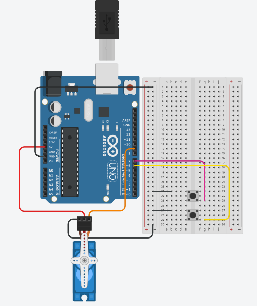

Keimo Asjade Internet ja robootika
Koduõppe nädal Servo 360 mootor kontroll nuppude abil
Tinkercad:

Tinkercad link
Kood:
#include <Servo.h> // Lisame Servo teegi, et saaks mootorit juhtida
const int BUTTON1_PIN = 6; // Nupp 1 (päripäeva)
const int BUTTON2_PIN = 7; // Nupp 2 (vastupäeva)
const int SERVO_PIN = 9; // Servo mootor on ühendatud pordiga 9
Servo servo;
int lastButton1State;
int lastButton2State;
int currentButton1State;
int currentButton2State;
void setup() {
Serial.begin(9600); // Serialühendus, et saaksime Serial Monitori kasutada
pinMode(BUTTON1_PIN, INPUT_PULLUP);
pinMode(BUTTON2_PIN, INPUT_PULLUP);
servo.attach(SERVO_PIN); // Ühendame servo pordiga
// Loeme esialgse nupuseisu
currentButton1State = digitalRead(BUTTON1_PIN);
currentButton2State = digitalRead(BUTTON2_PIN);
}
void loop() {
// Salvestame eelmise ja loeme uue nupu 1 seisu
lastButton1State = currentButton1State;
currentButton1State = digitalRead(BUTTON1_PIN);
// Salvestame eelmise ja loeme uue nupu 2 seisu
lastButton2State = currentButton2State;
currentButton2State = digitalRead(BUTTON2_PIN);
// Kui nupp 1 vajutatakse (päripäeva)
if (lastButton1State == HIGH && currentButton1State == LOW) {
Serial.println("Paripaeva 360 kraadi");
servo.write(0); // Täiskiirus päripäeva (0)
delay(1000); // Ootame umbes 1 sekund (360° pöörde aeg)
servo.write(90); // Peatame mootori
}
// Kui nupp 2 vajutatakse (vastupäeva)
if (lastButton2State == HIGH && currentButton2State == LOW) {
Serial.println("Vastupaeva 360 kraadi");
servo.write(180); // Vastupäeva (180)
delay(1000); // Ootame umbes 1 sekund (360° pöörde aeg)
servo.write(90); // Peatame mootori
}
}
Allikad: